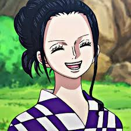
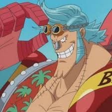

Bienvenido al mundo de Monkey D. Luffy y su tripulación
"One Piece" explora temas como la libertad, la amistad, el coraje, y la aventura. También aborda cuestiones sociales y políticas, incluyendo la corrupción y la opresión.
¿Sobre que se basa One Piece?
La historia sigue las aventuras de Monkey D. Luffy, un joven que gana habilidades elásticas después de comer una "Fruta del Diablo". Su objetivo es encontrar el "One Piece", el legendario tesoro del Rey de los Piratas, Gol D. Roger, y convertirse en el próximo Rey de los Piratas. A lo largo de su viaje, Luffy forma una tripulación diversa conocida como los Piratas del Sombrero de Paja, cada uno con sus propias habilidades y sueños.


Tripulación de los Sombrero de Paja
Monkey D. Luffy

Capitán de la tripulación. Su sueño es convertirse en el Rey de los Piratas.
Tiene habilidades elásticas debido a haber comido la Fruta del Diablo Gomu Gomu.
Roronoa Zoro

Espadachín. Aspira a ser el mejor espadachín del mundo. Utiliza un estilo de lucha con
tres espadas llamado Santoryu.
Nami

Navegante. Su sueño es crear un mapa del mundo completo. Es experta en navegación y clima.
Usopp

Francotirador. Quiere convertirse en un valiente guerrero del mar como su padre. Es inventor
y tiene una gran puntería.
Sanji

Cocinero. Sueña con encontrar el legendario mar All Blue. Es un experto en cocina y
combate con las piernas.
Tony Tony Chopper

Médico. Un reno que comió la Fruta del Diablo Hito Hito no Mi, lo que le permite
transformarse en una forma humana. Quiere curar todas las enfermedades.
Nico Robin
Arqueóloga. Su objetivo es descubrir la verdadera historia del mundo descifrando los
Poneglyphs. Tiene la habilidad de la Fruta del Diablo Hana Hana no Mi, que le permite hacer
crecer partes de su cuerpo en cualquier superficie.
Franky
Carpintero. Sueña con construir un barco capaz de navegar por todo el mundo. Es un cyborg
con habilidades mecánicas avanzadas.
Brook

Músico. Un esqueleto viviente que comió la Fruta del Diablo Yomi Yomi no Mi, lo que le
permitió volver a la vida. Sueña con reunirse con su antigua ballena amiga, Laboon.
Jinbe

Timonel. Un hombre-pez y ex-capitán de los Piratas del Sol. Sueña con la coexistencia
pacífica entre humanos y hombres-pez.